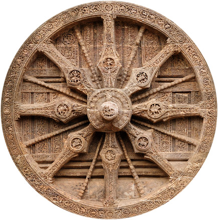
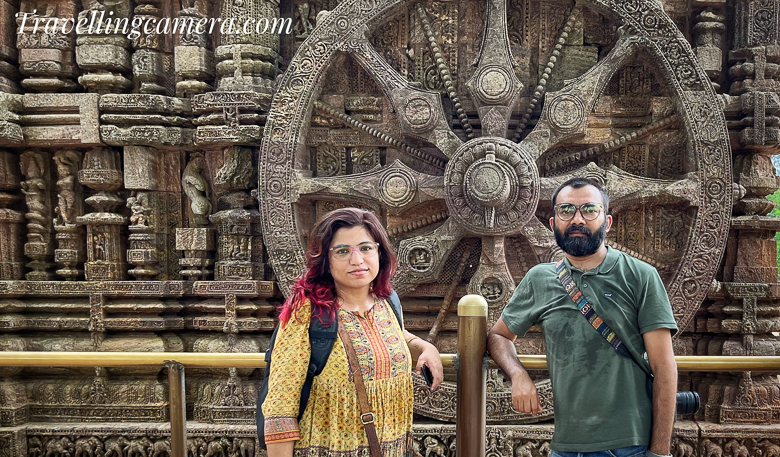
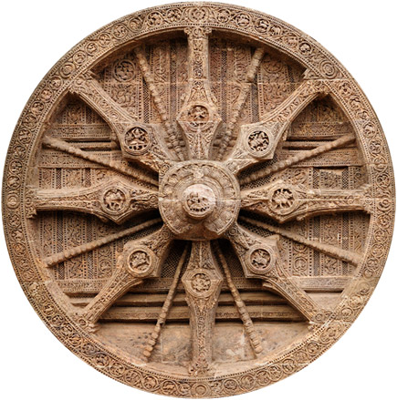
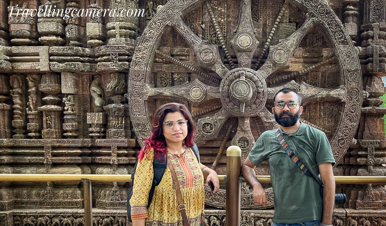

The Konark Sun Temple, located in Odisha, India, is a 13th-century CE architectural marvel dedicated to the Sun God, Surya. Built by King Narasimhadeva I of the Eastern Ganga Dynasty, it is designed as a massive chariot with intricately carved stone wheels, pillars, and walls.
 


